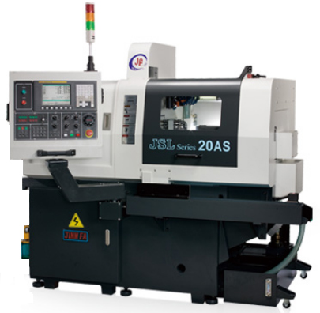
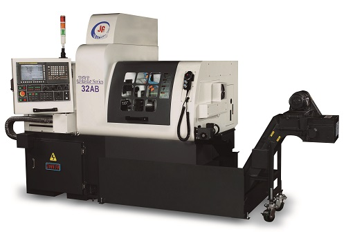
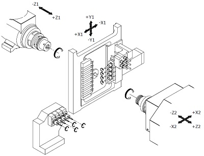
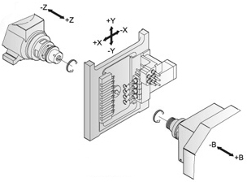
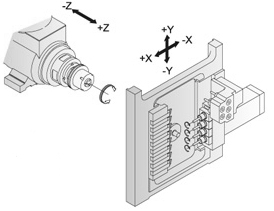
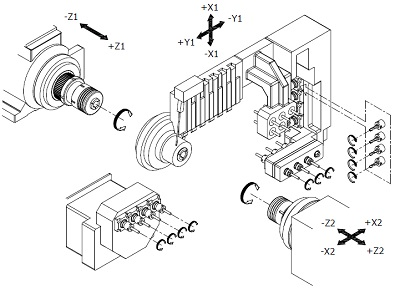

Přesné dlouhotočné CNC automaty a víceosá obráběcí centra Jinn Fa
Dodáváme vysoce produktivní CNC soustruhy švýcarského typu pro sériové třískové obrábění z tyčí od průměru 1 mm do 42 mm. Kompletní technologie včetně protivřetena, osy Y2 a podavačů tyčí.
Jinn Fa JSL-20A & JSL-20AS (3+1 až 4+2 osy)
Základní řada špičkových dlouhotočných automatů pro tyčový materiál do průměru 20 mm. Tuhé litinové lože Meehanite, vysokorychlostní vřeteno 10 000 ot/min a lineární vedení pro maximální přesnost.
- 3 až 4 lineární osy + C-osa na hlavním vřetenu
- Radiální a axiální poháněné nástroje pro frézování
- Řídicí systém Mitsubishi M70 nebo Fanuc 0i-TF

Jinn Fa JSL-20AB & JSL-20RB (5+2 osy s protivřetenem)
Pětiosý automat s plnohodnotným protivřetenem a synchronizovanou C-osou umožňující kompletní obrobení obou stran dílce v jednom cyklu bez nutnosti další operace.
- 5 lineárních os (X1, Y1, Z1, X2, Z2) + 2 C-osy
- Protivřeteno s otáčkami až 8 000 ot/min (motor 2,2 kW)
- Kapacita až 24 nástrojových pozic

Jinn Fa JSL-26AB / 32AB / 42AB (Těžké soustružení)
Výkonové automaty pro třískové obrábění větších průměrů tyčí (26, 32 a 42 mm). Zesílená konstrukce lože o hmotnosti 3 400 kg pro pohlcování vibrací při obrábění nerezu a titanu.
- Průchod vřetena až 42 mm s motorem 7,5 kW
- Možnost obrábění s vodicím pouzdrem i bez pouzdra
- Vysokotlaké chlazení středem nástrojů 70 bar

Jinn Fa JSL-42ABY (7 lineárních os + Y2 osa)
Vlajková loď kategorie Swiss-Type. Unikátní konfigurace s interpolovanou osou Y2 na protivřetenu pro nejnáročnější mimostředové frézovací a vrtací operace.
- 7 lineárních os + 2 rotační C-osy (osa Y2)
- Až 14 poháněných nástrojových pozic (6 000 ot/min)
- Řízení Fanuc 31i-B5 s nano-interpolací

Technické parametry CNC dlouhotočných automatů
Detailní rozměry, otáčky vřeten a výkony pro dimenzování vaší strojírenské výroby.

Swiss Type LatheDlouhotočný CNC automat Jinn Fa JSL-20A / 20AS
Přesný CNC dlouhotočný soustružnický automat švýcarského typu pro sériovou výrobu přesných rotačních dílců do průměru 20 mm. 3 až 4 lineární osy + C-osa.

5+2 osy / ProtivřetenoVysoce produktivní CNC automat JSL-20AB / 20RB
Pětiosý švýcarský automat s plnohodnotným protivřetenem a synchronizovanou C-osou umožňující kompletní obrobení dílce z obou stran bez přepínání.

Průměr tyče až 42 mmVýkonové CNC automaty JSL-26AB / 32AB / 42AB
Robustní CNC dlouhotočné soustruhy pro obrábění tyčí do průměru 32 a 42 mm. Určeno pro náročné třískové obrábění nerezových ocelí, titanu a slitin.

Y2 osa / Plná synchronizaceVíceosé obráběcí centrum Jinn Fa JSL-42ABY s Y2 osou
Vrcholná řada švýcarských automatů s plně interpolovanou osou Y2 na protivřetenu pro nejsložitější komplexní frézovací operace mimo osu dílce.
Kompletní technologické řešení na klíč
Výběr a dimenzování stroje
Analýza vašich výkresů, optimalizace časů cyklu a doporučení nejvhodnější konfigurace os, vodicího pouzdra a podavače tyčí.
Odladění technologie & Programování
Zpracování NC programů, výběr řezných nástrojů a vzorkování prvních sériových kusů přímo u zákazníka naším technologem.
Instalace & Zaškolení obsluhy
Ustavení stroje na geometrii, propojení s automatickým podavačem a komplexní zaškolení seřizovačů na systémy Fanuc a Mitsubishi.
Autorizovaný záruční i pozáruční servis
Rychlá technická podpora z Prahy a Zlína, originální náhradní díly a kleštiny skladem pro minimalizaci odstávek výroby.
Konzultace strojírenské výroby
Navštivte naši centrálu v Praze-Vinoři nebo servisní a technologickou kancelář ve Zlíně.
Sídlo společnosti
DA-swiss s.r.o.
Mladoboleslavská 679
190 17 Praha - Vinoř
Kanceláře & Technologické zázemí
Zálešná I / 1108
760 01 Zlín
Telefon: +420 731 644 759
E-mail: info@da-swiss.cz
Statutární vedení & IČO
Jednatel: Jindřich Kolář
IČO: 03139719 | DIČ: CZ03139719
Poptávka CNC technologie
Zašlete nám výkres dílce nebo specifikaci požadavků na obrábění. Náš technolog vám zpracuje návrh.